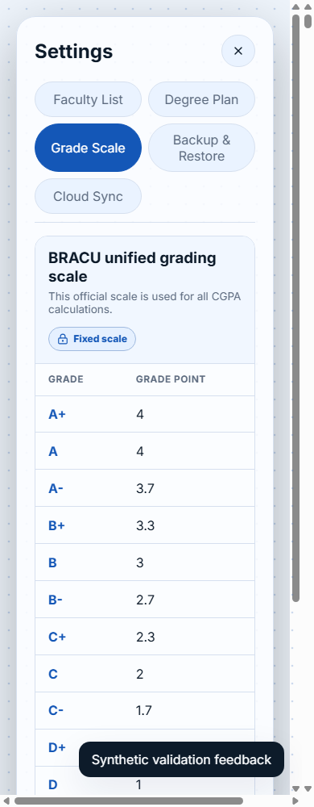
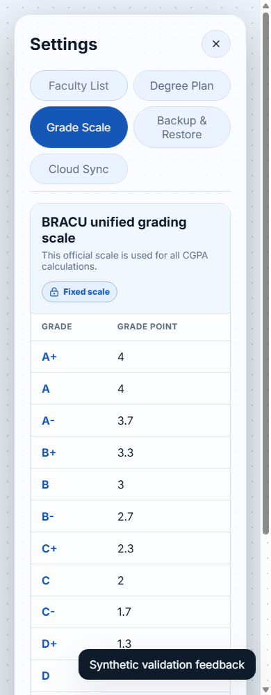

R-010 three-way reviewR-010 native dialog alternative
Actual matched browser captures. Original, previously selected custom A, and native B. 106-record owner register unchanged. No new selection or deployment.
Report · Minimal A → B diff
settingsModal · 390 × 1000 · light
settingsModal · 390 × 1000 · dark
settingsModal · 1440 × 1000 · light
settingsModal · 1440 × 1000 · dark
dashboardModal · 390 × 1000 · light
dashboardModal · 390 × 1000 · dark
dashboardModal · 1440 × 1000 · light
dashboardModal · 1440 × 1000 · dark
courseModal · 390 × 1000 · light
courseModal · 390 × 1000 · dark
courseModal · 1440 × 1000 · light
courseModal · 1440 × 1000 · dark
departmentModal · 390 × 1000 · light
departmentModal · 390 × 1000 · dark
departmentModal · 1440 × 1000 · light
departmentModal · 1440 × 1000 · dark
Validation toast · mobile light
original
option-anative